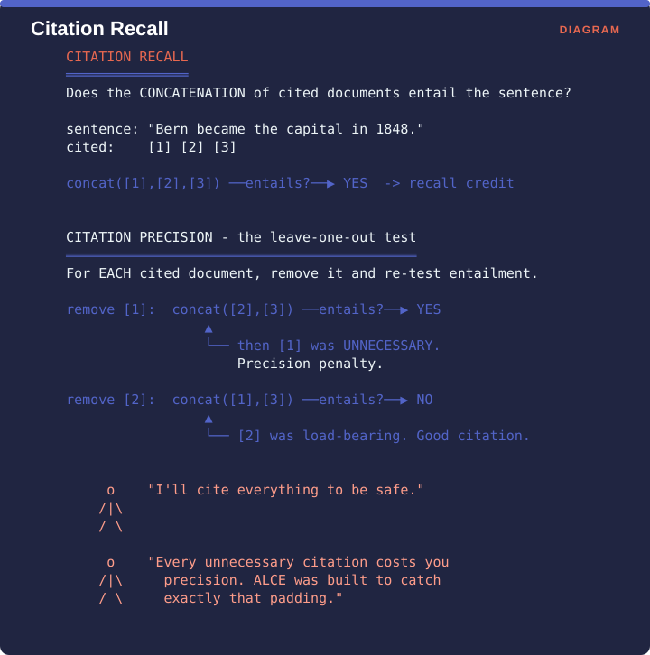

Measuring Retrieval › C.5 ALCE - citation precision and recall
One-line: Does the cited evidence actually support the sentence, and is every citation necessary?
Facets: Correctness | claim | ref | G | ESTABLISHED VERIFIED Source: Gao, Yen, Yu & Chen, EMNLP 2023, pp. 6465-6488 · arXiv:2305.14627
Once a system shows citations to users, a new failure becomes available to it. The model can cite every document it was given for every sentence it writes, which guarantees that whatever supports the claim is somewhere in the list, and makes the citations useless to a reader trying to check anything. Measuring only whether the cited material supports the claim actively rewards that behaviour.
ALCE assesses responses on citation quality, correctness and fluency. Correctness checks whether the generated answer entails the gold reference, judged by the natural language inference model called TRUE.
This is the mechanism worth understanding, because it is genuinely clever and widely misunderstood.

Citation recall asks whether all the cited documents taken together support the sentence. For the sentence “Bern became the capital in 1848” with citations [1], [2] and [3], you concatenate the three cited documents and test whether they entail the sentence. If they do, the sentence earns recall credit.
Citation precision asks a harder question, which is whether each individual citation was necessary. For each cited document in turn, you remove it and test entailment again. Removing [1] leaves [2] and [3], which still entail the sentence, so [1] was unnecessary and the sentence takes a precision penalty. Removing [2] leaves [1] and [3], which no longer entail the sentence, so [2] was load-bearing and counts as a good citation.
This is the anti-shotgun-citation metric. A model that cites all five retrieved chunks for every sentence scores perfect recall and terrible precision, and every unnecessary citation costs it something.
Anything with a regulatory citation obligation, including legal briefs, medical literature reviews and financial research notes. Citation precision is the metric that catches defensive cite-everything behaviour, which is what makes outputs unreviewable.
Consumer search summaries. Recall matters more than precision here, since users want to know the claim is backed and rarely audit whether each individual link was load-bearing.
High-citation-density technical writing. Watch the cost, because if your sentences average six citations then the leave-one-out test is six entailment calls per sentence.
Use ALCE’s precision notion specifically if your product shows citations to users. Recall on its own rewards padding, and padded citations destroy user trust faster than missing ones do, because a user who clicks a citation and finds it irrelevant stops clicking citations altogether.
If the full leave-one-out test is too expensive, sample sentences and cap the test at sentences carrying three citations or fewer.
Measuring Retrieval · Madhava Gaikwad · First edition, September 2026